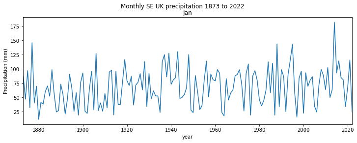

023 Plotting Graphs
Purpose
We have seen from 021 Streams and 022 Read write files how to access both text and binary datasets, either from the local file system or from a URL.
In this section, we will learn how to plot graphs from such data.
We will be using the core matplotlib library for this. We will show only basic plotting here. You will find many examples that you can develop from the the matplotlib site.
You might follow these notes up by looking at the Python packages bokeh and seaborn for improved visualisation and interaction.
Prerequisites
You will need some understanding of the following:
- 001 Using Notebooks
- 002 Unix with a good familiarity with the UNIX commands we have been through.
- 003 Getting help
- 010 Variables, comments and print()
- 011 Data types
- 012 String formatting
- 013_Python_string_methods
- 020_Python_files
- 021 Streams
- 022 Read write files
You will need to know how to use pandas for reading a CSV dataset. Note that you can do plotting within pandas. But this is much the same as using matplotlib directly, so we will not be using pandas plotting. We will introduce the Modis class for simple downloading and reading of MODIS datasets.
Simple x-y plot
We have previously seen a dataset of Monthly Southeast England precipitation (mm) in a tabular form on the Met Office website amnd how to load this into pandas:
import pandas as pd
from geog0111.gurlpath import URL
# Monthly Southeast England precipitation (mm)
site = 'https://www.metoffice.gov.uk/'
site_dir = 'hadobs/hadukp/data/monthly'
site_file = 'HadSEEP_monthly_qc.txt'
url = URL(site,site_dir,site_file)
panda_format = {
'skiprows' : 3,
'na_values' : [-99.9],
'sep' : r"[ ]{1,}",
'engine' : 'python'
}
df=pd.read_table(url.open('r'),**panda_format)
# df.head: first n lines
df.head()
| YEAR | JAN | FEB | MAR | APR | MAY | JUN | JUL | AUG | SEP | OCT | NOV | DEC | ANN | |
|---|---|---|---|---|---|---|---|---|---|---|---|---|---|---|
| 0 | 1873 | 87.1 | 50.4 | 52.9 | 19.9 | 41.1 | 63.6 | 53.2 | 56.4 | 62.0 | 86.0 | 59.4 | 15.7 | 647.7 |
| 1 | 1874 | 46.8 | 44.9 | 15.8 | 48.4 | 24.1 | 49.9 | 28.3 | 43.6 | 79.4 | 96.1 | 63.9 | 52.3 | 593.5 |
| 2 | 1875 | 96.9 | 39.7 | 22.9 | 37.0 | 39.1 | 76.1 | 125.1 | 40.8 | 54.7 | 137.7 | 106.4 | 27.1 | 803.5 |
| 3 | 1876 | 31.8 | 71.9 | 79.5 | 63.6 | 16.5 | 37.2 | 22.3 | 66.3 | 118.2 | 34.1 | 89.0 | 162.9 | 793.3 |
| 4 | 1877 | 146.0 | 47.7 | 56.2 | 66.4 | 62.3 | 24.9 | 78.5 | 82.4 | 38.4 | 58.1 | 144.5 | 54.2 | 859.6 |
The pandas dataframe is essentially a dictionary, so we refer to the data for column JAN and df['JAN'] etc.
We can access the column headings as:
headings = df.columns
print(headings)
Index(['YEAR', 'JAN', 'FEB', 'MAR', 'APR', 'MAY', 'JUN', 'JUL', 'AUG', 'SEP',
'OCT', 'NOV', 'DEC', 'ANN'],
dtype='object')
so, if we wanted just the months, we would want to leave out the first and last entry, and this would be:
headings = df.columns[1:-1]
print(headings)
Index(['JAN', 'FEB', 'MAR', 'APR', 'MAY', 'JUN', 'JUL', 'AUG', 'SEP', 'OCT',
'NOV', 'DEC'],
dtype='object')
Let's plot some of this dataset now:
import matplotlib.pyplot as plt
fig, axs = plt.subplots(1,1,figsize=(10,10))
axs.plot(df["YEAR"],df['JAN'],label='JAN')
[<matplotlib.lines.Line2D at 0x7f876bc11e50>]
We can easily customise this by adding titles and labels:
import matplotlib.pyplot as plt
# make a useful title
year0 = list(df["YEAR"])[0]
year1 = list(df["YEAR"])[-1]
name = f'Monthly SE UK precipitation {year0} to {year1}'
# plot size
x_size,y_size = 12,4
# set up the figure:
# 1 x 1 sub-plots
# size of plot 10,4
fig, axs = plt.subplots(1,1,figsize=(x_size,y_size))
# set the figure title
fig.suptitle(name)
# plot y-data and set the label
axs.plot(df["YEAR"],df['JAN'],label='JAN')
# set x-limits to get a neat graph
axs.set_xlim(year0,year1)
# set the subplot title
axs.set_title('JAN')
# y-label
axs.set_ylabel(f'Precipitation (mm)')
# x-label
axs.set_xlabel(f'year')
Text(0.5, 0, 'year')

The code to do this sort of plot is simple and generic. This example has most of what you will need in terms of coding for line plots.
If we wanted to do several plots over each other, we can simply call axs.plot again, but we will also find it useful to set a legend:
# make a useful title
name = f'Monthly SE UK precipitation'
# plot size
x_size,y_size = 12,4
fig, axs = plt.subplots(1,1,figsize=(x_size,y_size))
# plot y-data and set the label
axs.plot(df["YEAR"],df['JAN'],label='JAN')
axs.plot(df["YEAR"],df['FEB'],label='FEB')
axs.set_xlim(year0,year1)
# set legend now
axs.legend(loc='best')
# set the subplot title
axs.set_title('JAN-FEB')
# y-label
axs.set_ylabel(f'Precipitation (mm)')
# x-label
axs.set_xlabel(f'year')
Text(0.5, 0, 'year')

If, instead, we wanted these on separate sub-plots, we specify that in the plt.subplots call. For a line of 2 plots, we use:
plt.subplots(2,1,...)
We should also increase the y_size variable, to make the plot longer, and notice that axs is a tuple now, where we access axs[0] for the first plot, axs[1] for the second etc.
If we had 2 rows of plots and 2 columns, axs would be 2-dimensional and we would refer to axs[0,0], axs[0,1], axs[1,0] and axs[1,1]. It is easier deal with as a one-dimensional array though. We can achieve this by applying:
axs = axs.flatten()
after it has been created. Then we refer to the sub-plots simply as axs[0], axs[1], axs[2] and axs[3].
Below, we also choose to set the line colour to black (k in the axs[...].plot() command).
import matplotlib.pyplot as plt
name = f'Monthly SE UK precipitation'
# plot size
x_size,y_size = 12,8
fig, axs = plt.subplots(2,1,figsize=(x_size,y_size))
axs = axs.flatten()
# set the figure title
fig.suptitle(name)
# plot y-data and set the label for the first panel
axs[0].plot(df["YEAR"],df['JAN'],'k',label='JAN')
axs[0].set_ylabel(f'JAN Precipitation (mm)')
axs[0].set_xlim(year0,year1)
# plot y-data and set the label for the next panel
axs[1].plot(df["YEAR"],df['FEB'],'k',label='FEB')
axs[1].set_ylabel(f'FEB Precipitation (mm)')
axs[1].set_xlim(year0,year1)
# x-label
axs[1].set_xlabel(f'year')
Text(0.5, 0, 'year')

Exercise 1
We have seen how to access the dataset labels using:
headings = df.columns[1:-1]
- Copy the code to read the HadSEEP monthly datasets above
- Write and run code that plots the precipitation data for all months separate subplots.
Errorbars, symbols, and savefig
We often need to include error bars in out plots. The simplest form of this involves setting a variable yerr, assumed equal positive and negative around y:
We can then use:
plt.errorbar(x,y,yerr=yerr)
to plot the error bars. More sophisticated options are available for moore complex cases.
When we plot the errorbars, we might also like to plot a symbol at each data point. We can do this by giving an extra argument in plot. For example:
plt.plot(x,y,'o')
will plot small circles at the data points. This can be customised by symbol and/or colour.
We also show here how to save the plot to an image file, using plt.savefig:
import pandas as pd
from geog0111.gurlpath import URL
# Monthly Southeast England precipitation (mm)
site = 'https://www.metoffice.gov.uk/'
site_dir = 'hadobs/hadukp/data/monthly'
site_file = 'HadSEEP_monthly_qc.txt'
url = URL(site,site_dir,site_file)
panda_format = {
'skiprows' : 3,
'na_values' : [-99.9],
'sep' : r"[ ]{1,}",
'engine' : 'python'
}
df=pd.read_table(url.open('r'),**panda_format)
# get mean and std over all months
We will go into the details of numpy in a future session, but here we just need to calculate the mean and standard deviation of precipitation over all months.
import numpy as np
months = df.columns[1:-1]
year = df["YEAR"]
mean = np.array(df[months]).mean(axis=1)
std = np.array(df[months]).std(axis=1)
import matplotlib.pyplot as plt
# make a useful title
year0 = list(df["YEAR"])[0]
year1 = list(df["YEAR"])[-1]
name = f'Monthly SE UK precipitation {year0} to {year1}: mean and 1.95 std (over months)'
# plot size
x_size,y_size = 12,4
fig, axs = plt.subplots(1,1,figsize=(x_size,y_size))
fig.suptitle(name)
# plot y-data and error bars
x = year
y = mean
yerr = std * 1.96
# ls="none" so that no line is plotted
axs.errorbar(x,y,yerr=yerr,ls='none')
axs.plot(x,y,'o')
axs.set_ylabel(f'Precipitation (mm)')
# x-label
axs.set_xlabel(f'year')
axs.set_xlim(year0,year1)
# save to file
ofile = 'data/precip.png'
plt.savefig(ofile)
We can now load the saved image as a figure with the markdown code:


import matplotlib.pyplot as plt
# make a useful title
name = f'Monthly SE UK precipitation'
# plot size
x_size,y_size = 12,4
fig, axs = plt.subplots(1,1,figsize=(x_size,y_size))
# plot y-data and set the label
axs.plot(df["YEAR"],df['JAN'],label='JAN')
axs.plot(df["YEAR"],df['FEB'],label='FEB')
axs.set_xlim(year0,year1)
# set legend now
axs.legend(loc='best')
# set the subplot title
axs.set_title('JAN-FEB')
# y-label
axs.set_ylabel(f'Precipitation (mm)')
# x-label
axs.set_xlabel(f'year')
Text(0.5, 0, 'year')

Date fields
Many datasets we deal with will be a function of time. Sometimes the date information may be presented in a format we can use as an integer (or even floating point number), an example being the year field above. But other times, we might need to work with the date format that comes with the dataset to make it something appropriate.
A useful Python package for this is datetime.
Core elements of this is are: datetime class, the
datetime
from datetime import datetime
# now
now = datetime.now()
print(f'It is now {now}')
# access individual elements
print(f'day {now.day}')
print(f'month {now.month}')
print(f'year {now.year}')
print(f"{now.hour} O'clock")
It is now 2020-10-04 08:07:59.698707
day 4
month 10
year 2020
8 O'clock
You can set up the datetime fields explicitly:
from datetime import datetime
# datetime(year, month, day, hour, minute, second, microsecond)
then = datetime(1918, 11, 11, 11, 0, 0, 0)
print(f'It was then {then}')
# you can access this using keywords
then = datetime(year=1918, month=11, day=11, hour=11)
print(f'It was then {then}')
It was then 1918-11-11 11:00:00
It was then 1918-11-11 11:00:00
And do operations such as subtraction:
jan1_2019 = datetime(2019,1,1)
jan1_2020 = datetime(2020,1,1)
days_in_year = (jan1_2020-jan1_2019).days
print(f'year 2019 had {days_in_year} days')
year 2019 had 365 days
To add/subtract one day, or smaller unit, use timedelta:
from datetime import datetime
from datetime import timedelta
now = datetime.now()
yesterday = now - timedelta(days=1)
print(f'yesterday was {yesterday}')
yesterday was 2020-10-03 08:07:59.773833
strftime and strptime
We use strftime to format a date string:
from datetime import datetime
# current date and time
now = datetime.now()
time_now = now.strftime("%H:%M:%S")
print(f"time now: {time_now}")
date_now = now.strftime("%m/%d/%Y")
# mm/dd/YY H:M:S format
print(f"data now: {date_now}")
time now: 08:07:59
data now: 10/04/2020
and strptime to load a datetime object from a string. To do so, we need to specify the format of the string. For example:
from datetime import datetime
date_then = "11 November, 1918"
# %d, %B and %Y -> day, month, year
date_object = datetime.strptime(date_then, "%d %B, %Y")
print(f"date: {date_object}")
date: 1918-11-11 00:00:00
or
from datetime import datetime
date_then = "2020-06-20"
date_object = datetime.strptime(date_then, "%Y-%m-%d")
print(f"date: {date_object}")
date: 2020-06-20 00:00:00
NOAA precipitation
The file 2276931.csv contains precipitation data for an NOAA weather station HAVANA 4.2 SW, FL US for the year 2020 to date. Precipitation data are in inches.
We want to plot precipitation as a function of time. First, we read the data as previously:
import pandas as pd
from geog0111.gurlpath import URL
site = 'https://raw.githubusercontent.com'
site_dir = '/UCL-EO/geog0111/master/data'
site_file = '2276931.csv'
# form the URL
url = URL(site,site_dir,site_file)
# Read the file into pandas using url.open('r').
df=pd.read_csv(url.open('r'))
# print the first 5 lines of data
df.head(5)
| STATION | NAME | DATE | PRCP | SNOW | |
|---|---|---|---|---|---|
| 0 | US1FLGD0002 | HAVANA 4.2 SW, FL US | 2020-01-01 | 0.00 | 0.0 |
| 1 | US1FLGD0002 | HAVANA 4.2 SW, FL US | 2020-01-02 | 0.00 | 0.0 |
| 2 | US1FLGD0002 | HAVANA 4.2 SW, FL US | 2020-01-03 | 0.00 | 0.0 |
| 3 | US1FLGD0002 | HAVANA 4.2 SW, FL US | 2020-01-04 | 0.98 | NaN |
| 4 | US1FLGD0002 | HAVANA 4.2 SW, FL US | 2020-01-05 | 0.00 | 0.0 |
We can refer to the datasets we see in the table above then as df['DATE'], df['PRCP'] etc.
If we want to use the station name, and access the first date from the dataframes, we can do this with:
# take the first entry
name = df['NAME'][0]
date = df["DATE"][0]
Exercise 2
- Read the
2276931.csvdataset into a pandas dataframe calleddf - Convert the field
df["DATE"]to a list calleddates - Use your understanding of
datetimeto convert the datadates[0]to adatetimeobject calledstart_date - Convert the data
date[-1]to adatetimeobject calledend_date - Find how many days between start_date and end_date
- Use a loop structure to convert the all elements in
datesto be the n umber of days after the start date
Let's do a simple plot of df['PRCP'] as a function of days after 01/01/2020:
import matplotlib.pyplot as plt
from datetime import datetime
name = df['NAME'][0]
# use strptime to get date from %Y-%m-%d format
start_date = datetime.strptime(df["DATE"][0],"%Y-%m-%d")
# plot size
x_size,y_size = 15,3
# set up the figure
fig, axs = plt.subplots(figsize=(x_size,y_size))
# set the title
fig.suptitle(name)
# plot x,y-data
# get number of days after start date
x = [(datetime.strptime(d,"%Y-%m-%d")-start_date).days for d in df["DATE"]]
y = df['PRCP']
axs.plot(x,y)
# label
axs.set_ylabel(f'PRCP / inches')
# format date string with strftime
axs.set_xlabel(f'days after {start_date.strftime("%d/%m/%Y")}')
Text(0.5, 0, 'days after 01/01/2020')
We can use the date fields directly in the plot above, which might make the information easier to understand. But by default, all of the data fields will be printed:
import matplotlib.pyplot as plt
name = df['NAME'][0]
# plot size
x_size,y_size = 15,3
# set up the figure
fig, axs = plt.subplots(figsize=(x_size,y_size))
# set the title
fig.suptitle(name)
# plot y-data
axs.plot(df['DATE'],df['PRCP'])
# label
axs.set_ylabel(f'PRCP / inches')
axs.set_xlabel(f'date')
Text(0.5, 0, 'date')

This is not a limitation of matplotlib, just a formatting issue. A quick look into the matplotlib dates API shows us that we can quite simply set the x-ticks to be every month:
months = mdates.MonthLocator()
axs.xaxis.set_major_locator(months)
import matplotlib.pyplot as plt
import matplotlib.dates as mdates
name = df['NAME'][0]
# plot size
x_size,y_size = 15,3
# set up the figure
fig, axs = plt.subplots(1,1,figsize=(x_size,y_size))
# set the title
fig.suptitle(name)
axs.plot(df['DATE'],df['PRCP'])
# format the ticks: every month
months = mdates.MonthLocator()
axs.xaxis.set_major_locator(months)
# label
axs.set_ylabel(f'PRCP / inches')
axs.set_xlabel(f'date')
Text(0.5, 0, 'date')

Although the default formatting in matplotlib will do an excellent job for the vast majority of your needs, you should be aware that you may meet cases where you need to look a little deeper into the documentation to find the right solution to your problem. You should always try to find such solutions in the existing codebase, rather than attempting to hack your way around a problem.
Exercise 3
We examined a pulsar time series in a previous section of notes. It contains the successive pulses of the oscillation signal coming from the Pulsar PSR B1919+21 discovered by Jocelyn Bell in 1967.
The dataset as presented contains samples in columns, so that sample 0 is df[0], up to df[79] (80 samples).
- Plot the pulsar samples in a series of 80 sub-plots.
Advice:
For the figure, do not label the axes as it will get too cluttered. In any professional figure of that sort, you would need to explain the axes in accompanying text.
For further 'effects' consider switching off the plotting of axes in each subplot, with:
ax.axis('off')
for axis ax (this may be something like axs[i] in your code).
The results should be reminiscent of:

and

If you want to go further towards re-creating this, you consult the matplotlib gallery for ideas.
Summary
In this section, we have learned how to plot graphs from datasets we have read in or downloaded from the web. We have concentrated in simple line graphs, with possibly multiple sub-plots here, although there are many other types of graph you may consider.
The matplotlib gallery provides a useful starting point for other types of plot. You might also consider the Python packages bokeh and seaborn for improved visualisation and interaction.
Remember:
import matplotlib.pyplot as plt
import matplotlib.dates as mdates
| Function | Comment | Keywords |
|---|---|---|
fig, axs = plt.subplots(xshape,yshape) |
set up new figure as array of sub-plots xshape by yshape and return fig object for figure and axs object for subplots. axs is array of objects shape (xshape,yshape), or single object if (1,1). We often use axs = axs.flatten() to flatten the axs array to 1D. |
figsize=(sx,sy) : set figure size sx by sy |
plt.savefig("ofile.png") |
Save plot to file "ofile.png" |
|
fig.suptitle(name) |
set title name at top of figure fig |
|
im = axs.plot(xdata,ydata,cs) |
plot line graph with ydata as a function of xdata and return plot object im. If argument cs is given, this is a colour/symbol e.g. k+ for black crosses. |
label=str : set str as label for this line. For use with legend |
im = plt.errorbar(xdata,ydata) |
Error bar plot for ydata as a function of xdata. Needs kwarg |
yerr=yerr : set y-error bar to values in array yerr |
axs.set_xlim(x0,x1) |
Set plot x-extent to from x0 to x1 |
|
axs.set_ylim(y0,y1) |
Set plot x-extent to from y0 to y1 |
|
axs.set_title(name) |
set sub-plot axs title to name |
|
axs.set_xlabel(xlab) |
set x-axis label to xlab |
|
axs.set_ylabel(ylab) |
set y-axis label to ylab |
1 |
axs.legend() |
set legend in plot | loc='best' : best location, otherwise top left etc. |
mdates.MonthLocator() |
MonthLocator object of month locators, e.g. months = mdates.MonthLocator() |
|
axs.xaxis.set_major_locator(months) |
set major ticks on x-axis to Locator object of months |
Some colours and symbols:
| symbol/colour | name |
|---|---|
| 'k+' | black plus |
| 'r.' | red dot |
| 'go' | green circle |
| 'b-' | blue line |
| 'c--' | cyan dashed line |
| 'y-o' | yellow line with circles |
datetime
from datetime import datetime
| function | comment |
|---|---|
datetime.now() |
date and time for now |
datetime(year, month, day, hour, minute, second, millisecond) |
return datatime object for time/date specified. Not all fields need be given. Can also use keywords but year, month and day must be given e.g.: datetime(2020,day=1,month=2,hour=12) |
datetime.day |
day etc. |
timedelta |
subtract two datetimes to get a timedelta |
timedelta.days |
number of days in timedelta |
dt.strftime("%H:%M:%S") |
represent datetime object dt as hour:minute:second |
dt.strftime("%m/%d/%Y") |
represent datetime object dt as month/day/year |
datetime.strptime(str,format) |
load string str into datetime object interpreting as format format, e.g. datetime.strptime("11 November, 1918", "%d %B, %Y") -> 1918-11-11 00:00:00; e.g. datetime.strptime("2020-06-20", "%Y-%m-%d") -> 2020-06-20 00:00:00 |